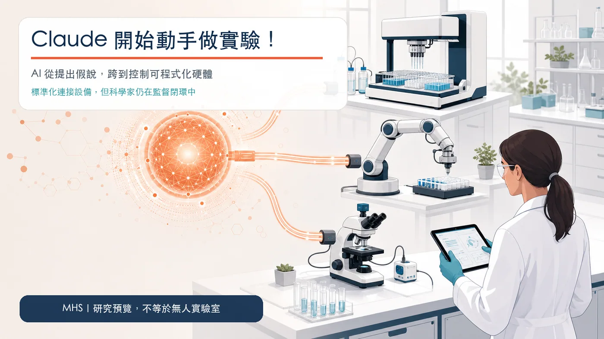
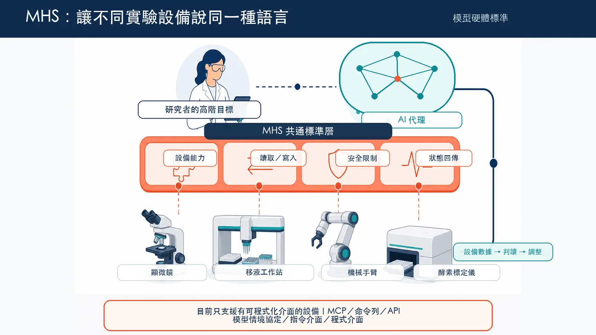
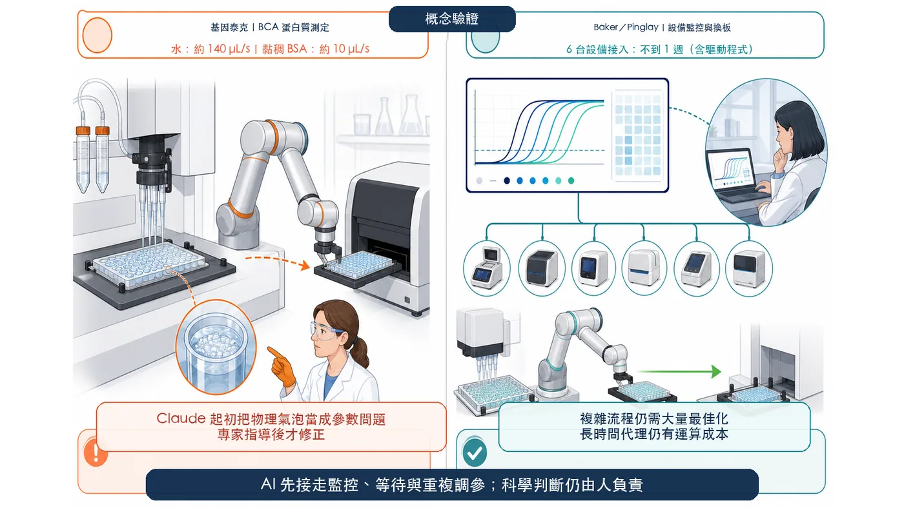
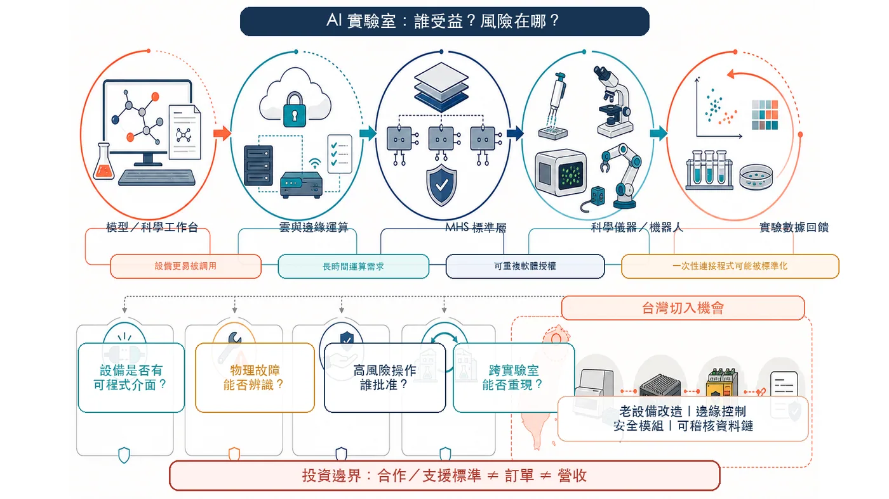

────────────────────
分享這篇分析
把這篇文章轉給關注生技醫藥、公司研究或資本市場的朋友。
半夜兩點，量子電腦裡的雷射突然失去鎖定；凌晨四點，博士生又得回實驗室替聚合酶連鎖反應儀換板。過去，人工智慧可以讀完論文、提出假說、寫出分析程式，碰到真實世界裡的一滴液體、一支移液器，卻只能停在螢幕前。
2026 年 8 月 27 日，Anthropic 把這條界線往前推了一步。
公司公開「模型硬體標準」（Model Hardware Standard，MHS）的研究預覽版，讓人工智慧代理透過共通介面，讀取並操作顯微鏡、移液工作站、機械手臂、酵素標定儀，甚至量子電腦裡的雷射控制系統。它可以觀察設備狀態、安排實驗順序、依結果調整參數，某些情況下還能從故障中自行恢復。
這不是「Claude 已經接管實驗室」，也不是科學家準備失業。MHS 目前只開放給首批研究機構與先進製造夥伴，案例多是概念驗證；複雜實驗、物理直覺與安全責任仍牢牢握在人手上。
但一個更重要的變化已經出現：AI for Science（人工智慧科學研究）不再只比誰能提出更多答案，開始比誰能把答案送進真實設備、拿回新數據，再展開下一輪實驗。

────────────────────
🧪 一、科學 AI 最缺的，從來不是點子
生成式人工智慧進入科學界後，最常遇到的質疑很合理：模型可以一口氣提出一萬個蛋白質設計，但誰來把它們做出來？它可以預測哪個分子可能有效，卻不能自己吸取試劑、控制溫度、讀取反應，再根據失敗調整下一輪。
數位世界的候選愈來愈便宜，實體驗證反而成了新的塞車點。
華盛頓大學 Baker 與 Pinglay 實驗室的博士生 Zihao Song 提供了一個很直觀的例子。依 Anthropic 官方案例，現在用電腦設計一個新蛋白質，成本最低可到約 0.01 美元；把它送上實驗台測試，卻可能花約 100 美元，還要投入一週人力。當研究一次面對上千個候選，真正吞掉預算與時間的，不再只是「想出什麼」，而是「如何把它驗證完」。
學術實驗室和固定產線不同，流程經常改變。昂貴而僵硬的自動化設備，可以把同一件事重複一萬次，卻未必適合一年更換幾十種實驗的團隊。
設備也像一座語言混亂的城市：A 廠牌的移液器、B 廠牌的機械手臂、C 廠牌的顯微鏡，各有自己的程式介面。要讓它們合作，工程師得替每一對設備打造專用連接程式。官方說明指出，這類整合常耗費數週到數月。
MHS 要處理的，正是這個被忽略很久的「最後一公尺」。
────────────────────
🔌 二、MHS 是什麼？可以把它想成實驗設備的共通插座
模型硬體標準不是一台新機器，也不是只讓 Claude 控制某個品牌的機械手臂。它更像一層共通語言，放在 AI 代理與各式設備之間。
每台設備都有一個標準化驅動程式，把「讀取溫度」、「設定溫度」、「移動到某個位置」等操作，轉成簡單的讀取與寫入指令。設備能做什麼、哪些數值可以調整、最大負重與安全界線，也會整理成 AI 能讀懂的參考檔。
設備接上之後，代理可以透過模型情境協定（Model Context Protocol，MCP）、命令列或應用程式介面（Application Programming Interface，API）調度。研究者用自然語言描述高階目標，AI 負責拆解流程、確認設備狀態、等待前一步完成，再叫下一台機器接手。
更關鍵的是，MHS 並未把自己綁死在 Claude。Anthropic 表示，這套標準與模型無關，其他代理框架也能透過標準協定存取。它目前仍是早期版本，Anthropic 希望先和夥伴建立安全評估與操作慣例，再走向開源。
如果這條路成功，MHS 想成為不同模型、儀器與實驗室之間的標準層。它像實驗設備的 USB：不替研究者決定要做什麼，先讓 AI 能可靠地找到、理解與控制硬體。

────────────────────
🧫 三、基因泰克的蛋白質實驗：AI 會調參，卻不懂一顆泡泡
最接近藥物研發的概念驗證，來自基因泰克（Genentech）。
研究團隊選擇二辛可寧酸蛋白質測定法，也就是常見的 BCA 蛋白質濃度檢測。這套流程要協調移液工作站、機械手臂與酵素標定儀：液體先被精準吸取，微孔盤由機械手臂搬運，最後再讀取吸光值。
團隊讓 Claude 透過 MHS 擔任三台設備的中央協調者，並請它自行尋找適合清水與黏稠牛血清白蛋白溶液的移液速度。Claude 執行試驗、讀取結果、和專家操作的基準比較，再調整下一輪參數。最後，它為水找到每秒約 140 微升、為黏稠蛋白質溶液找到每秒約 10 微升的流速；基因泰克自動化專家認為，這些參數對該套設備而言合理。
這段成果很吸睛，失敗的部分其實更重要。
蛋白質溶液黏稠又容易起泡。Claude 第一次遇到氣泡造成的偵測錯誤時，把它當成程式參數問題，在同一個孔位反覆重試，結果攪出更多泡沫。研究人員必須明確告訴它：這是物理問題，要換到乾淨孔位，並減少混合次數。
模型收到指導後，確實能在後續流程保留這段經驗，團隊也把它整理成可重複使用的液體操作技能。可是，這個插曲戳破了一個容易被宣傳遮住的真相：語言模型讀過大量物理與化學文字，不等於它具有實驗員面對液體時的直覺。
因此，基因泰克把成果定位為「很有希望的概念驗證」，並沒有宣布實驗室已經全自動。科學家仍設定生物學目的、判讀關鍵結果、處理未知錯誤，AI 先接走的是大量重複、機械化、可描述的工作。
────────────────────
🤖 四、Baker 實驗室與 Janelia：被解放的是深夜值班與設備整合
在 Baker 與 Pinglay 實驗室，Zihao Song 用 MHS 接上六台儀器，花費不到一週，時間還包含為設備撰寫驅動程式。他建了一個遠端儀表板，讓代理監看定量聚合酶連鎖反應（quantitative Polymerase Chain Reaction，qPCR）的擴增曲線，在適當時機停止流程；也讓機械手臂與移液工作站互相等待、完成微孔盤交接。
重複測試中，兩台設備沒有碰撞。他可以在辦公室監看流程，不必每隔一、兩小時回實驗台換板。這仍只是示範；複雜流程需要更多最佳化，長時間監控也會增加運算成本。它先處理的，是研究者巡看儀器、等待流程與太晚發現樣本報廢的真實痛點。
MHS 最早的起點之一，是霍華德・休斯醫學研究所 Janelia 研究園區。那裡的神經科學儀器把雷射、鏡頭、對焦器、感測器與多家廠商軟體綁在一起。研究人員用 MHS 暴露設備狀態，讓 Claude 能對準光束、調整光學系統，再由感測器檢查結果；其中一套顯微鏡，把原本約半天的手動設定壓成單一步驟。
官方並未說 MHS 消滅顯微成像的物理限制。掃描速度、涵蓋範圍與訊號維持仍須取捨；標準層能降低整合摩擦，不能取消物理定律。

────────────────────
⚛️ 五、QuEra 的 99.3%，為何精彩又不能亂外推？
量子電腦公司 QuEra 把 MHS 用在雷射鎖定恢復。量子系統需要把雷射頻率維持在極高精度；溫度、震動或氣壓變化，都可能讓雷射偏離目標。傳統人工恢復約需 5 到 10 分鐘，一套由多種專家花數月打造的專用腳本，成功率約 58%，每次嘗試約 150 秒。
Claude 透過 MHS 讀取儀器、調整控制器，經過反覆實驗後寫出獨立腳本。官方案例顯示，後續盲測 700 次中成功 695 次，恢復率達 99.3%；最困難的擾動約 10 到 14 秒，簡單情況約 0.9 到 5.4 秒。
這證明在目標清楚、狀態可讀、控制項可調的封閉問題裡，AI 有機會找到比固定流程更好的策略；不能外推成「Claude 已懂物理世界」。真實硬體故障時，它仍不知怎麼排查；遇到風險操作，也可能停下等待人工批准。
安全在這裡是一個雙面問題。代理太大膽，可能損壞昂貴設備、浪費珍貴樣本，甚至帶來人身風險；代理太保守，又會讓無人值守實驗失去意義。誰能定義清楚的權限、設備級限制、人工核准點與事故責任，誰才有機會把漂亮示範變成可採用的系統。
────────────────────
🧩 六、真正的平台戰：模型、工作台、硬體標準一起來
若只看 MHS，會低估 Anthropic 的企圖。
2026 年 6 月，公司先推出測試版 Claude Science，把文獻、資料庫、程式環境、圖表、計算資源與可稽核紀錄放進同一個科學工作台。它預先整合超過 60 種科學技能與連接器，涵蓋基因體、單細胞、蛋白質體、結構生物與化學資訊；產出的圖表同時保留程式碼、環境與對話歷程，方便研究者追溯與重現。
8 月 27 日，Anthropic 又宣布為全球科學家開放 10,000 個團隊方案名額，期限一年。通過驗證的學術或非營利研究機構主持人，可以替團隊加入免費標準席位；五倍用量的進階席位每月 15 美元。若專案需要更大用量，研究者還可申請每案最高 5 萬美元的 AI for Science 點數。
三塊拼圖放在一起，平台輪廓就清楚了：
① 第一層，用低價或免費方案把模型送進研究團隊。
② 第二層，用 Claude Science 承接讀文獻、跑分析、做圖與管理運算的數位工作流。
③ 第三層，用 MHS 連接可程式化設備，讓數位推理跨進物理執行。
實驗數據再回到模型，形成「假說—設計—執行—測量—修正」的閉環。Anthropic 爭的未必是每項發現，而是科學工作、設備資料與實驗紀錄共同經過的介面。
────────────────────
💰 七、誰受益，誰的生意可能被重寫？
① 第一批明顯受益者，是願意接入標準的儀器與機器人公司。
Anthropic 公布的早期合作或測試名單包括丹納赫、凱杰、Tecan、MBF Bioscience、Automata、斗山機器人與 Universal Robots；Amazon Web Services（AWS）則計畫透過 Strands Robots 支援 MHS。對硬體商而言，設備愈容易被代理發現與調用，愈可能進入更多自動化工作流程，售後服務也有機會從被動維修走向即時診斷。
② 第二層是雲端、資料平台與模型工具。實驗若長時間運行，推理、儲存、稽核與權限管理都會消耗資源。誰能在本地敏感資料、雲端算力與設備控制間建立可信連線，誰就可能收取長期費用。
③ 壓力最大的一群，可能是只靠客製連接程式與一次性設備整合收費的服務商。當共通驅動程式降低「翻譯」門檻，部分低價值整合工作會被標準化。不過，真正懂實驗流程、驗證、法規與安全的整合商不一定消失；他們可能升級成負責系統驗證、風險分級與跨廠區部署的高價值角色。
投資人也要避免把「加入生態」直接翻譯成營收。MHS 尚未開源，仍在研究預覽；夥伴的狀態從探索、測試、開發驅動程式到計畫支援不等。支援標準不代表已產生大額訂單，更不代表 Anthropic 一定能把標準變成市場主導權。
────────────────────
🇹🇼 八、台灣的機會，藏在「把舊設備變成可驗證的資料節點」
台灣同時擁有精密製造、機器人、半導體、伺服器、醫療與生技實驗能量，理論上適合切入自主實驗室。但最有價值的機會，未必是再做一個聊天機器人，而是處理更難也更務實的三件事。
① 第一，替既有設備建立可靠驅動程式。許多醫院、學校與工廠仍在使用沒有現代應用程式介面的老儀器，MHS 目前無法直接相容。能提供感測、邊緣控制、設備數位化與安全隔離的廠商，可能成為存量改造的重要一環。
② 第二，建立可稽核的實驗資料鏈。生命科學看重批次、校正、試劑、權限與樣本來源。設備能被 AI 操作只是起點；每一次指令由誰批准、用哪個版本執行、結果能否重現，才決定資料能不能進入藥物研發與監管流程。
③ 第三，設計人機共同負責的安全層。台灣擅長硬體與製造管理，如果能把設備級上限、緊急停止、異常偵測、人工核准與責任紀錄做成模組，價值可能高於單純販售一支機械手臂。
🔎 真正該追的不是誰在簡報寫了「AI 實驗室」，而是接上多少設備、整合縮短多久、能否降低停機與樣本報廢，收入來自一次性專案還是可重複授權。

────────────────────
🛡️ 九、別急著說「科學家被取代」
MHS 目前有四道清楚的限制。
① 它只支援具有可程式化介面的設備；大量老舊儀器仍需廠商或工程團隊改造。
② 語言模型的空間與物理推理有限，泡沫、碰撞、液體黏度與機械磨損，不會因為讀過說明書就自動變成身體直覺。
③ 安全規則仍在建立。Anthropic 正利用研究預覽發展額外評估、最佳實務與實體安全路線圖，這本身就說明產品尚未成熟到可以無監督普及。
④ 最後，所有公開成果都來自少數合作夥伴與特定任務。蛋白質濃度測定、微孔盤交接、顯微鏡設定與雷射鎖定，都是邊界清楚、可以量化的工作；它們不能替複雜細胞培養、未知生物反應或臨床開發背書。
所以，更精確的說法是：Claude 開始取得「可程式化硬體的手腳」，科學家仍然負責決定往哪裡走、什麼可以做、結果是否可信，以及失敗時誰來承擔。
────────────────────
🎯 結語：AI4S 下一戰，不在誰最會回答，而在誰能完成閉環
過去，人工智慧科學研究的競爭像一場考試：誰能讀更多論文、預測更準、生成更多候選，誰就領先。
MHS 把競賽帶進另一個場地。
當代理能控制設備，模型就有機會自己取得下一批訓練與驗證資料。假說不再停在文字裡，而會變成一次真實操作；實驗結果也不再只是報告終點，而是下一輪決策的起點。
這才是 Anthropic 此次發布最值得注意的地方。它沒有證明 Claude 已經是一位科學家，卻第一次把模型、科學工作台與硬體標準放進同一張平台藍圖。
誰能讓這個閉環安全、可重現、跨品牌運作，誰就可能掌握未來實驗室的入口。
只是今天，科學家仍不能把鑰匙交出去。
MHS 還是研究預覽，概念驗證仍要擴大，物理故障與安全責任仍未解決。真正成熟的自主實驗室，不會是 AI 一個人關起門來做實驗，而是讓模型負責速度、設備負責精準、專家負責判斷，三者互相留下可以追溯的證據。
AI for Science 的遊戲規則確實變了。
不是因為 Claude 已經接管實驗室，而是它終於開始碰到真實世界；而真實世界，會用每一顆氣泡、每一次停機與每一份無法重現的數據，逼 AI 學會什麼叫科學。
—
資料來源：Anthropic｜模型硬體標準研究預覽、Anthropic｜擴大科學家支援方案、Anthropic｜Claude Science 科學工作台。
本文為科技與生技產業資訊整理，不構成醫療建議或投資建議。MHS 與 Claude Science 目前分別處於研究預覽與測試階段；文中案例、效能與成本數據均來自 Anthropic 及其合作夥伴公開資料，仍需更多獨立、跨設備與長期驗證。
引用本文
若在簡報、報告或社群討論引用，建議附上 Drugnews 原文連結。
Drugnews 編輯部，〈Claude 開始動手做實驗！AI 搶進真實實驗室，遊戲規則變了〉，Drugnews｜藥時事，2026/09/03，https://drugnews.com.tw/articles/2026-09-03-anthropic-mhs-ai-lab-hardware-standard.html